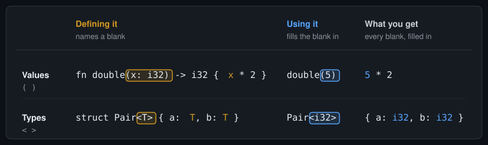
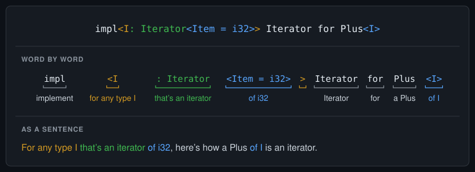

Telex
Telex
Rust's Angle Brackets in Plain English
Rust code is full of angle brackets, and some lines have so many that they're hard to read. Here's one from Inside an Iterator Chain, part 2:
impl<I: Iterator<Item = i32>> Iterator for Plus<I>By the end of this post, you'll be able to read that line out loud as an ordinary English sentence. It takes one rule, and a few phrases for saying each part.
The rule
Angle brackets hold types, the way parentheses hold values. And like parentheses, they do one of two jobs, depending on where they are:
- When you're defining something, its angle brackets name a blank: a type that will be chosen later.
- When you're using something, its angle brackets fill the blank in.
You already know this from functions. fn double(x: i32) defines a function, and its parentheses name a blank for a value, x. double(5) uses the function, and fills the blank in with 5. Angle brackets do the same thing for types.

The rest of this post takes the cases one at a time. Each one ends with a way to say the code in plain English, and by section 9 those phrases add up to a sentence for the line above.
Every example was compiled with rustc 1.97.0, edition 2024. Compiler errors are cut down to their key lines.
1. Defining a struct: the brackets name a blank
struct Pair<T> {
a: T,
b: T,
}This defines Pair, so <T> names a blank. T stands for a type that hasn't been chosen yet. Inside the struct, T can go anywhere a type can, so here it's the type of both fields.
Say it: for any type T, a Pair holds two Ts, a and b.
T isn't a keyword. It's a name you make up, the way you make up x for a function's parameter. One capital letter is the custom, but struct Pair<Element> works just as well.
Leave the brackets off, and T is a name nobody has defined. The compiler even suggests the fix:
struct Pair {
a: T,
b: T,
}error[E0425]: cannot find type `T` in this scope
help: you might be missing a type parameter
|
1 | struct Pair<T> {
| +++Enums and traits name their blanks the same way. The standard library defines Option as enum Option<T> { None, Some(T) }.
2. Using a type: the brackets fill the blank in
let p: Pair<i32> = Pair { a: 1, b: 2 };This line uses Pair instead of defining it, so <i32> fills the blank in. Every T in the struct becomes i32.
Say it: p is a Pair of i32.
Pair<i32> is a complete type. Pair on its own isn't, because it still has a blank. Write let p: Pair and the compiler reports "missing generics for struct Pair". If you want the compiler to fill the blank for you, write Pair<_>. The underscore means "work this one out". You'll often see it as Vec<_>, when an iterator is collected into a vector.
The Pair { a: 1, b: 2 } on the right has no brackets at all. When you build a value, the compiler can usually work the blank out from what you put in.
Rust's own word for a blank is a generic parameter, and for what fills it, a generic argument. They're worth knowing, because error messages use them. They're the same words as for functions: in fn double(x: i32), x is a parameter, and in double(5), 5 is an argument.
3. Functions name blanks too
fn first<T>(pair: Pair<T>) -> T {
pair.a
}This defines first, so <T> names a blank, for this function only. Then Pair<T> uses Pair, and fills its blank with this function's T.
Say it: for any type T, first takes a Pair of T and returns a T.
"For any type T" is how naming brackets sound out loud. It means the function works the same way whatever type ends up in the blank.
Calling first uses it, so brackets there would fill its blank in. You usually don't need them, because the compiler fills T in from the argument:
let n = first(p); // T is i32, because p is a Pair<i32>Sometimes the compiler can't tell, and you have to fill the blank in yourself. Then the brackets go after a :::
let n = "42".parse::<i32>().unwrap();Say it: n is "42", parsed as an i32.
parse turns text into a value, and its blank is the type of value you want. Nothing in "42" says which type that is, so if you leave the brackets out, the compiler stops with "type annotations needed".
This ::<> is nicknamed the turbofish. The :: is there because without it, Rust reads parse<i32>() as two comparisons, parse < i32 and > (). The compiler says "comparison operators cannot be chained", and suggests adding the ::.
4. An impl line usually does both
impl<T> Pair<T> {
fn swap(self) -> Pair<T> {
Pair { a: self.b, b: self.a }
}
}This line often trips people up. An impl block defines something, a set of methods, so it can name blanks. But it has no name of its own to hang the brackets on, so they go straight after the keyword: impl<T>. Then Pair<T> uses Pair, and fills its blank with that T.
Say it: for any type T, here are methods for a Pair of T.
So yes, T appears twice, and each one has its own job. The first names the blank. The second uses it to fill in Pair's blank. Neither is the T from struct Pair<T>: that name belongs to the struct's definition, and an impl never writes it. That's why an impl can pick any name it likes. impl<U> Pair<U> means exactly the same.
Leave out the first <T>, and the second is a name nobody has defined, just as in section 1:
error[E0425]: cannot find type `T` in this scope
help: you might be missing a type parameter
|
1 | impl<T> Pair<T> {
| +++Fill Pair's blank with a real type instead, and there's nothing new to name:
impl Pair<i32> {
fn add_up(&self) -> i32 {
self.a + self.b
}
}There are no brackets after impl, because there's no new blank.
Say it: here are methods for a Pair of i32 only.
That's useful when a method only makes sense for some types. add_up needs numbers, so it exists on Pair<i32> and nowhere else. Call it on a pair of &strs, and the compiler points out that "the method was found for Pair<i32>".
Here's every line so far, marked up and said out loud:
![Five lines of Rust, each with a plain-English reading. struct Pair<T> { a: T, b: T }: for any type T, a Pair holds two Ts, a and b. let p: Pair<i32>: p is a Pair of i32. fn first<T>(pair: Pair<T>) -> T: for any type T, first takes a Pair of T and returns a T. impl<T> Pair<T>: for any type T, here are methods for a Pair of T. impl Pair<i32>: here are methods for a Pair of i32 only. Naming brackets are boxed in orange and filling brackets in blue. In the function and the first impl, an arrow labelled same T runs from the naming brackets to Pair's brackets.](../assets/angle-brackets/fig2-every-line-so-far.svg)
T named in orange filling Pair's blank.5. A colon says what can go in the blank
use std::fmt::Display;
fn show<T: Display>(pair: Pair<T>) -> String {
format!("{} and {}", pair.a, pair.b)
}<T: Display> still names the blank T. The colon adds a requirement: whatever fills T must implement Display, the trait format! uses for {}. That's what lets the body print pair.a and pair.b.
It's the same colon as in x: i32. There, it says what kind of value can fill x. Here, it says what kind of type can fill T.
Say it: for any type T that implements Display, show takes a Pair of T and returns a String.
Without the requirement, T could be any type at all, including types that can't be printed. So the compiler won't let the body print it:
error[E0277]: `T` doesn't implement `std::fmt::Display`Rust calls a requirement like this a trait bound. When an error says something is "required by a bound", this is what it's talking about.
6. In a function, the requirement can go in three places
Section 5 put the requirement inside the brackets that name T. A where clause, after the return type, works too:
fn show<T>(pair: Pair<T>) -> String
where
T: Display,
{
format!("{} and {}", pair.a, pair.b)
}Say it: for any type T, show takes a Pair of T and returns a String, where T implements Display.
Or you can make the blank and state the requirement in one go, right inside the argument:
fn show(pair: Pair<impl Display>) -> String {
format!("{} and {}", pair.a, pair.b)
}Say it: show takes a Pair of some type that implements Display, and returns a String.
Side by side:
![Three versions of fn show, each requiring its type to implement Display. In the brackets: fn show<T: Display>(pair: Pair<T>) -> String, read as: for any type T that implements Display, show takes a Pair of T and returns a String. In a where clause: fn show<T>(pair: Pair<T>) -> String where T: Display, read as: for any type T, show takes a Pair of T and returns a String, where T implements Display. In the argument: fn show(pair: Pair<impl Display>) -> String, read as: show takes a Pair of some type that implements Display, and returns a String. The requirement has a dashed green outline in all three; only the first two have orange naming brackets.](../assets/angle-brackets/fig3-three-places.svg)
All three accept the same calls, with one exception, at the end of this section. So why have three?
Inside the brackets is the shortest way to write one simple requirement.
A where clause keeps the first line readable when there are several. It can also state requirements that brackets can't, like this one:
fn widen<T>(x: T) -> i64
where
i64: From<T>,
{
i64::from(x)
}Say it: for any type T, widen takes a T and returns an i64, where an i64 can be made from a T.
The requirement is on i64, not on T. Brackets can only hold requirements on the blank they name, so only a where clause can say this.
impl Display is the shortest of all, but it makes a blank without giving it a name. With no name, there's nothing for a turbofish to fill in. Try show::<i32>(p), and the compiler says the function has no blanks to fill:
error[E0107]: function takes 0 generic arguments but 1 generic argument was supplied
= note: `impl Trait` cannot be explicitly specified as a generic argument7. On an impl, where the requirement goes decides which methods get it
An impl block gives you the same choice, and there it changes which methods you can call. A requirement in impl<T: Display> applies to every method in the block. A where clause on one method applies to that method only:
impl<T> Pair<T> {
fn swap(self) -> Pair<T> {
Pair { a: self.b, b: self.a }
}
fn render(&self) -> String
where
T: Display,
{
format!("{} and {}", self.a, self.b)
}
}Say it: for any type T, here are methods for a Pair of T. render only works where T implements Display.
Take struct Thing;, a type that doesn't implement Display. A Pair<Thing> can still swap. Only render is ruled out:
error[E0277]: `Thing` doesn't implement `std::fmt::Display`
note: required by a bound in `Pair::<T>::render`Move the requirement up to impl<T: Display> Pair<T>, and swap is ruled out too: "the method swap exists for struct Pair<Thing>, but its trait bounds were not satisfied".
There's one more place you could put it: on the struct itself, as struct Pair<T: Display>. That's usually best avoided. Every generic impl and function that mentions Pair<T> then has to repeat the requirement, even ones that never print anything. Leave it off, and the compiler reports that "T doesn't implement std::fmt::Display", "required by a bound in Pair". An impl for one real type, like impl Pair<i32>, is fine without it, because i32 already implements Display.
8. An = fills in a blank by name
Some blanks don't live in angle brackets at all. Iterator has one. Here's the heart of its definition, trimmed down from the standard library:
trait Iterator {
type Item;
fn next(&mut self) -> Option<Self::Item>;
}Iterator has no angle brackets, so it names no blanks there. Instead, type Item; names a blank inside the trait: the type of the items the iterator hands out. Rust calls this an associated type. Each iterator fills it in inside its own impl, with a line like type Item = i32;.
When you use Iterator as a requirement, you can pin that blank down too. It isn't in the brackets, so you can't fill it in by position, the way Pair<i32> does. You fill it in by name, with an =:
fn total<I: Iterator<Item = i32>>(items: I) -> i32 {
items.sum()
}The outer brackets name the blank I, with a requirement. The requirement uses Iterator, and the inner brackets fill in its Item blank with i32.
Say it: for any type I that's an iterator of i32, total takes an I and returns an i32.
Writing Item = i32 here doesn't set anyone's Item. Each iterator still sets its own. What it does is narrow the requirement: only iterators whose items are i32s qualify. Pass one that hands out u8s, and the compiler says it "expected IntoIter<u8> to be an iterator that yields i32, but it yields u8".
Leave out the name, as if Iterator had a blank in its brackets, and the compiler points you to the fix:
error[E0107]: trait takes 0 generic arguments but 1 generic argument was supplied
help: replace the generic bound with the associated type
|
1 | fn total<I: Iterator<Item = i32>>(items: I) -> i32 {
| ++++++A colon works inside these brackets too, and means what it meant in section 5. Iterator<Item: Display> accepts any iterator whose items implement Display. As a where clause, that's where I: Iterator, I::Item: Display.
9. Now read the whole line
Back to the line from the start. Here it is in full, with the struct it belongs to, as part 2 wrote it:
struct Plus<I> {
inner: I,
amount: i32,
}
impl<I: Iterator<Item = i32>> Iterator for Plus<I> {
type Item = i32;
fn next(&mut self) -> Option<i32> {
let n = self.inner.next()?;
Some(n + self.amount)
}
}Plus wraps another iterator, inner, and adds amount to each item it hands out. The type Item = i32; inside the block is this impl filling in Iterator's Item blank.
Now the first line, piece by piece:

impl<I …>defines an impl, so these brackets name a blank: "for any type I" (section 4).I: Iteratoradds a requirement: "that's an iterator" (section 5).Iterator<Item = i32>fills inIterator'sItemblank by name: "of i32" (section 8).Iterator for Plus<I>says which trait this impl is for, and which type gets it. The<I>fillsPlus's blank with theInamed at the start: "a Plus of I" (section 4).
Say it: for any type I that's an iterator of i32, here's how a Plus of I is an iterator.
The second Iterator has no brackets. It has no blanks in brackets to fill, and its Item blank can't be filled on this line, because the impl fills it inside the block. Write Iterator<Item = i32> for Plus<I>, and the compiler says associated item constraints "are not allowed here".
As with functions, the requirement can move to a where clause, the way part 2 wrote its Apply impl. Then the brackets after impl only name the blank:
impl<I> Iterator for Plus<I>
where
I: Iterator<Item = i32>,
{
// the same body as before
}Say it: for any type I, here's how a Plus of I is an iterator, where I is an iterator of i32.
Cheat sheet
Every phrase from this post in one place:
| You see | You say |
|---|---|
struct Pair<T> | for any type T, a Pair … |
fn first<T>, impl<T> | for any type T |
Pair<i32> | a Pair of i32 |
Pair<_> | a Pair of whatever fits |
"42".parse::<i32>() | "42", parsed as an i32 |
T: Display | T that implements Display |
where T: Display | where T implements Display |
Pair<impl Display> | a Pair of some type that implements Display |
Iterator<Item = i32> | an iterator of i32 |
impl Iterator for Plus<I> | here's how a Plus of I is an iterator |
What's not here
Angle brackets have a few more jobs that this post skips. Lifetimes like <'a> and constants like <const N: usize> are blanks too, and follow the same rule. Default types, as in trait Add<Rhs = Self>, use an = that means something different from section 8's. And paths like <I as Iterator>::Item use angle brackets for another job entirely.
There's also a harder question: where should a blank go? On a trait, as in trait Process<T>, or on one of its methods, as in fn process<T>? They look alike, but they aren't. On the trait, one type can implement it several times, once for each T. On the method, every implementation has to accept every T the method allows. Choosing between them needs a post of its own.